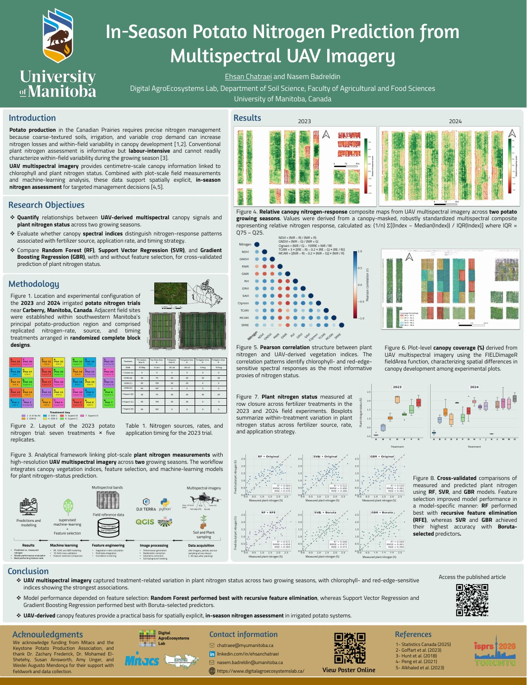
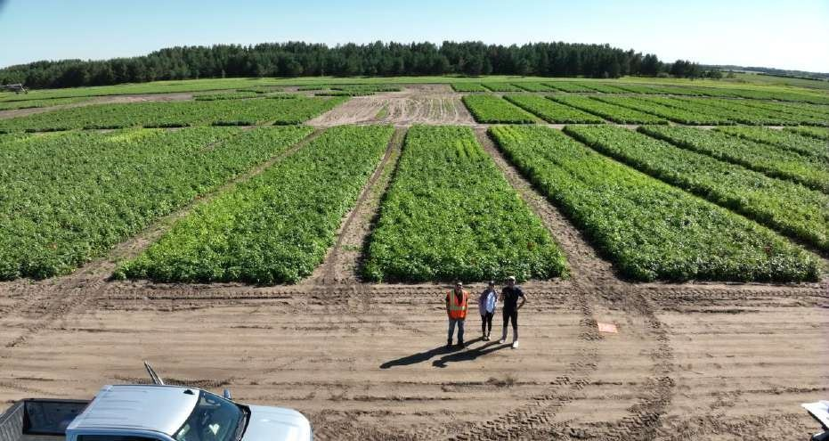
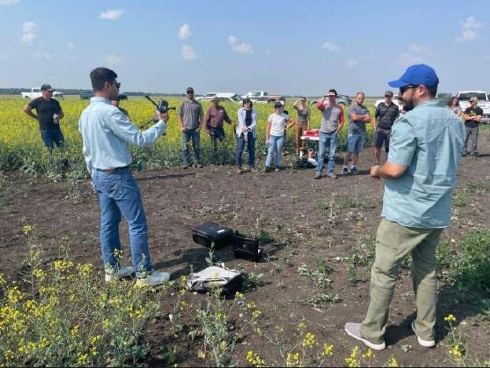
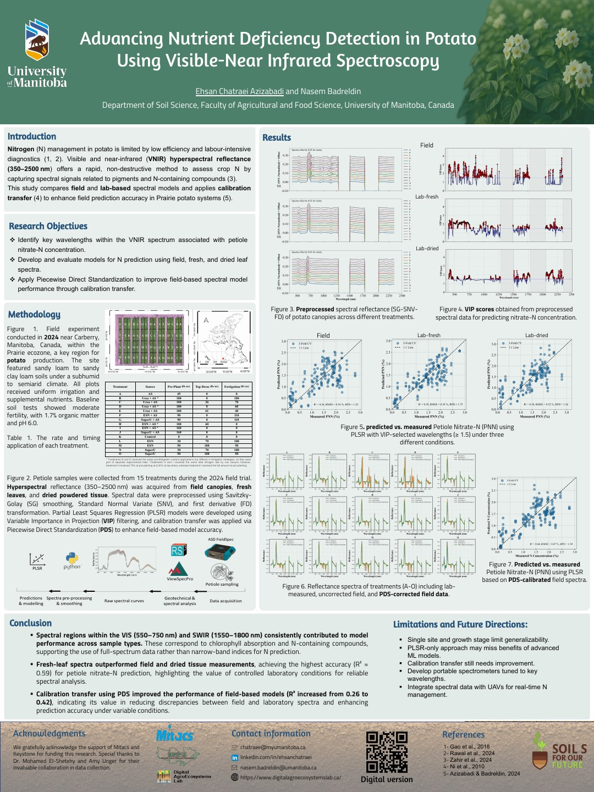
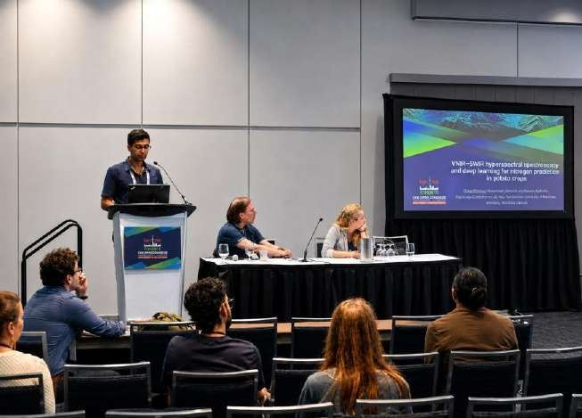

ISPRS Congress · Toronto · 2026
In-Season Potato Nitrogen Prediction from Multispectral UAV Imagery PDF

Putting instruments, methods and results in front of the people who work with them.

Carberry, Manitoba




University of Manitoba
In Introduction to Digital Agriculture, students compared measurements from an ASD spectrometer and a Nix sensor to see how leaves and soils reflect light. I also supported labs on satellite imagery and agricultural mapping, and demonstrated how multispectral and LiDAR measurements relate to observations in the field.
I supported course and laboratory instruction in Soil and Water Management and helped students with soil science laboratory exercises.

Our team received funding for a 24-month project to assess agricultural soils in Manitoba.
The project combines Planet Tanager satellite imagery with field and laboratory spectra.
Study design. Used randomized complete-block trials near Carberry, Manitoba, to compare nitrogen fertilizer sources, rates, and application timings in irrigated Russet Burbank potatoes.
Soil and crop measurements. Coordinated soil and plant sampling to characterize soil fertility, measure petiole nitrate at row closure, and record marketable tuber yield by plot at harvest.
Hyperspectral spectroscopy. Compared visible to shortwave infrared reflectance from field canopies, fresh leaves, and dried tissue to evaluate how measurement conditions affect nitrogen estimates.
Drone multispectral imagery and LiDAR. Planned flights and checked data quality. Combined vegetation indices with LiDAR-derived canopy height and structure to model crop nitrogen status and tuber yield.
Mentored a visiting researcher from Brazil for six months in UAV operations, hyperspectral data collection, and trial design.
ISPRS Congress · Toronto · 2026

Canadian Society of Soil Science · 2025

